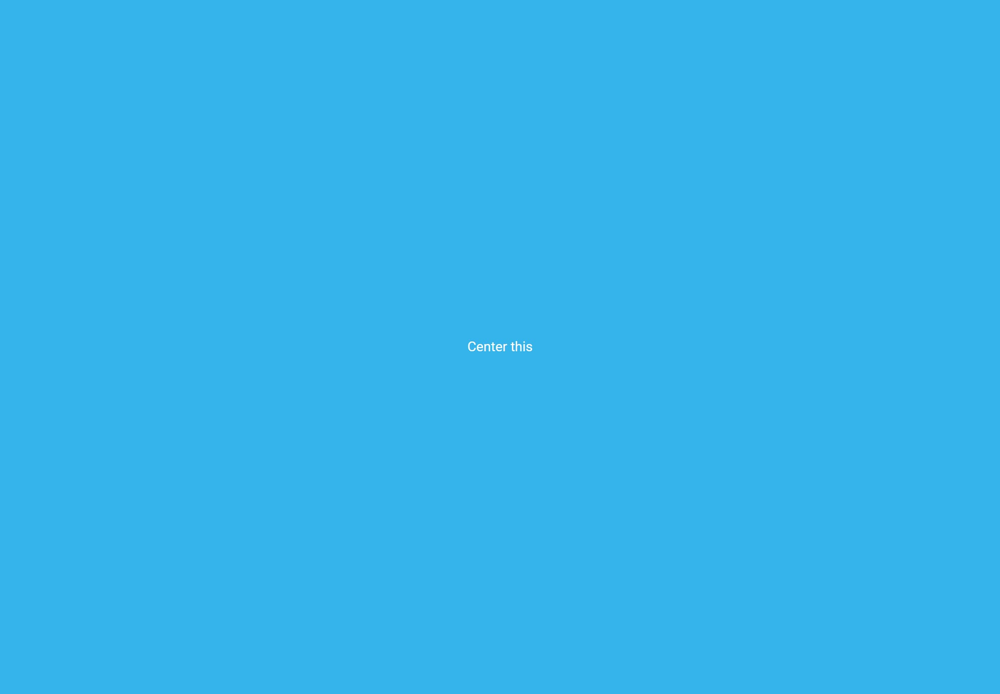
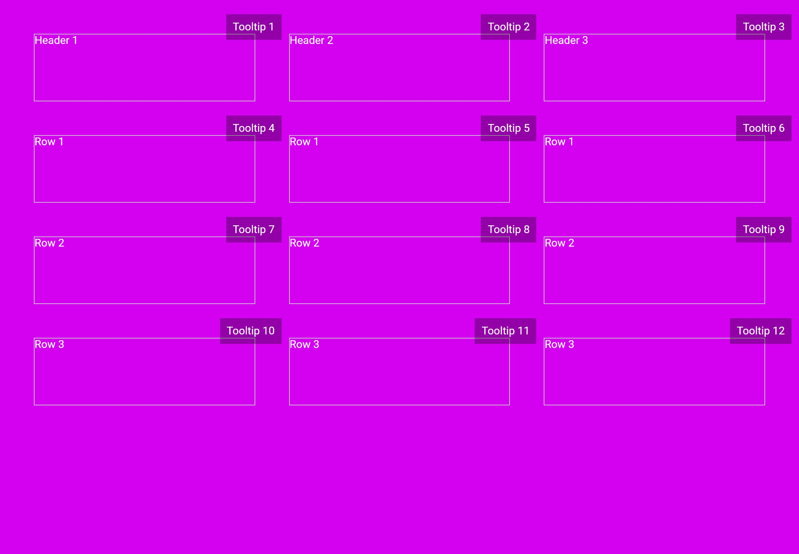

The problems
warning
For the HTML/CSS exercises in this project, please make sure to not use any CSS frameworks like Boostrap, Tailwind, Foundation, etc. For the javascript test, please don't use any component libraries.
Project Setup
- Create a NextJS app with TypeScript.
- Set up SASS project in the app.
- Create four routes:
- / - Application homepage.
- /center-a-div - Page for exercise one.
- /table - Page for exercise two.
- /javascript - Page for exercise three.
- Bonus point for using dynamic routing to handle some or all four pages above.
Exercises One - Center a DIV
- Create a div that takes up the entire viewport width and height.
- Give it a solid background color.
- Add a child element with "Center This" text.
- Center the element above in the middle of the page, both horizontal and vertically.
- Use as little html/css as possible.
- Bonus point for completing this exercise with multiple methods.
Example

Exercise Two - Table layout
- Create a three by four layout.
- On viewport > 1280px, the layout is 3 x 4.
- On viewport > 650px and < 1279px, the layout changes to 2 x 6.
- On viewport < 650px, the layout changes to 1 x 12.
- Around the layout, there should be a 50px gap to the edge of the screen.
- The cell width in all the viewport sizes. The cell height be at least 100px.
- The space between the cells should be 50px, both horizontal and vertical.
- Add a tooltip at the top right corner of each element.
- The tooltips should only be visible on hover of the cell it attaches to.
Example

Exercise Three - Javascript
Getting the data
- Use this free data api endpoint documentation: https://docs.irail.be/
- Get all the train stations from Belgium Public Transport api endpoint.
Using the data
- Create a table.
- The table columns should be dynamically generated using the train stations data.
- The columns should be Name, Latitude, Longitude.
- Add a note column as the last column in the table.
- In the table row, display the train station data in the table cell. For the note column, add an input field and ability to type notes for each row.
- Bonus points:
- Creating a link to google maps using the latitude and longitude information and make the name a link, also open the link in a new tab.
- Add search functionality.
- Add sort functionality.